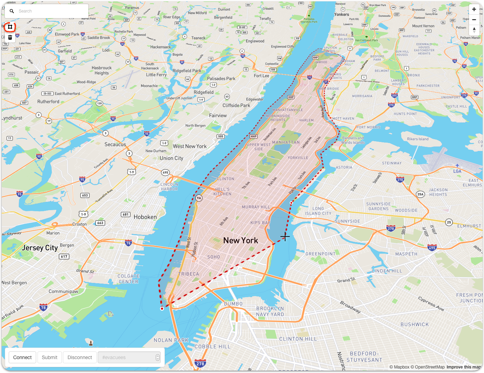
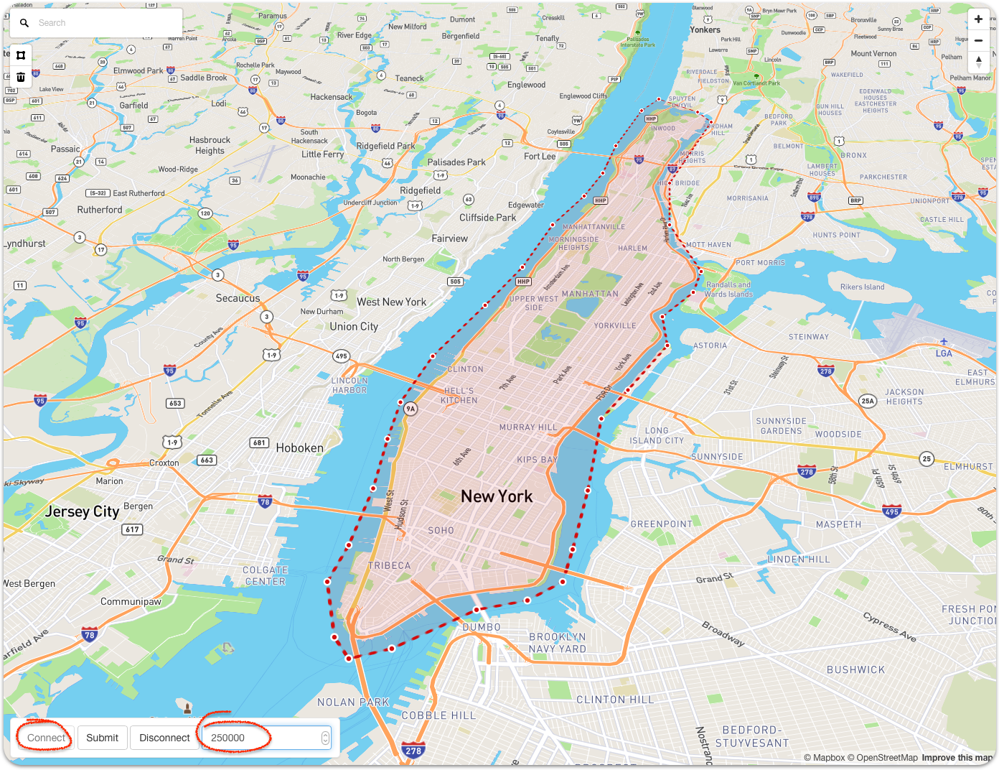
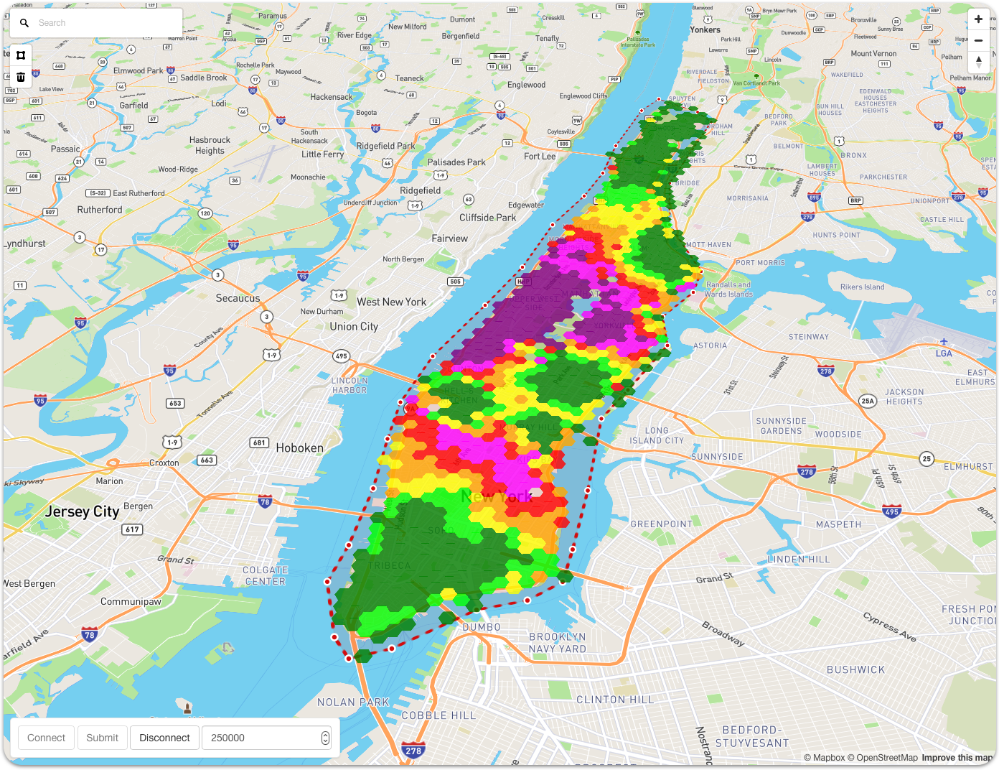
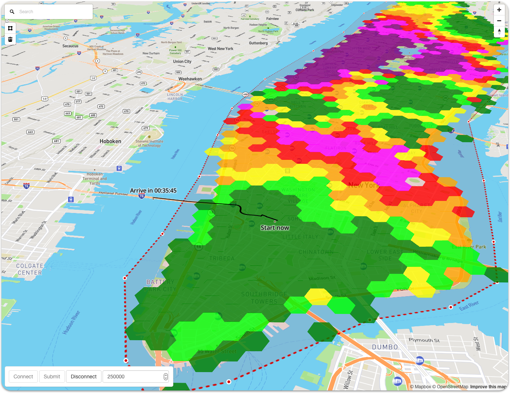

X
❮
❯

1. Zoom and pan to the area of interest.

2. Select polygon tool to mark the evacuation area by clicking along the perimeter. When done, hit Enter.

3. Press Connect and enter the number of evacuating vehicles.

5. Once the simulation run is completed, results will be displayed. Depending on the size of the evacuation
area and number of vehicles this will take some time. Don't reload the page while waiting for the results.

6. Now you can click at any location inside the evacuation area to get a suggested evacuation route with
expected travel time information.